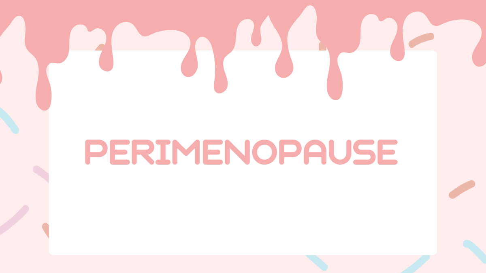
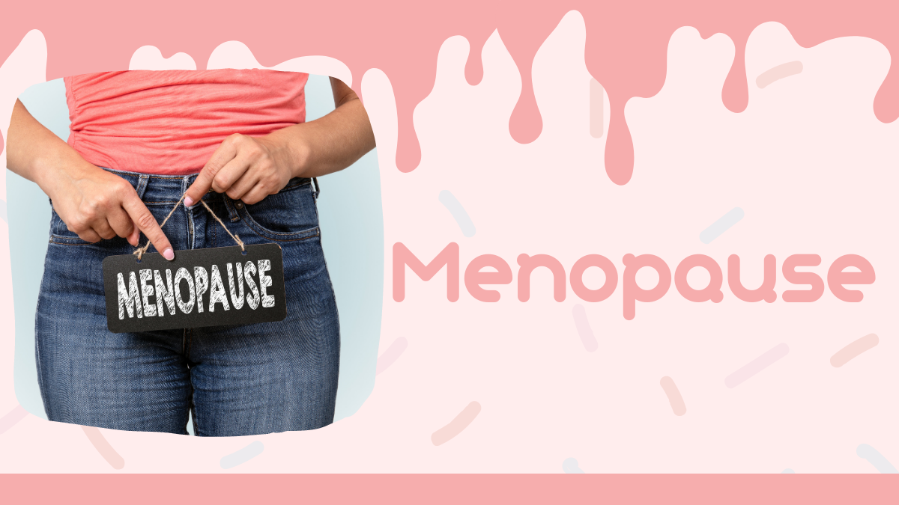
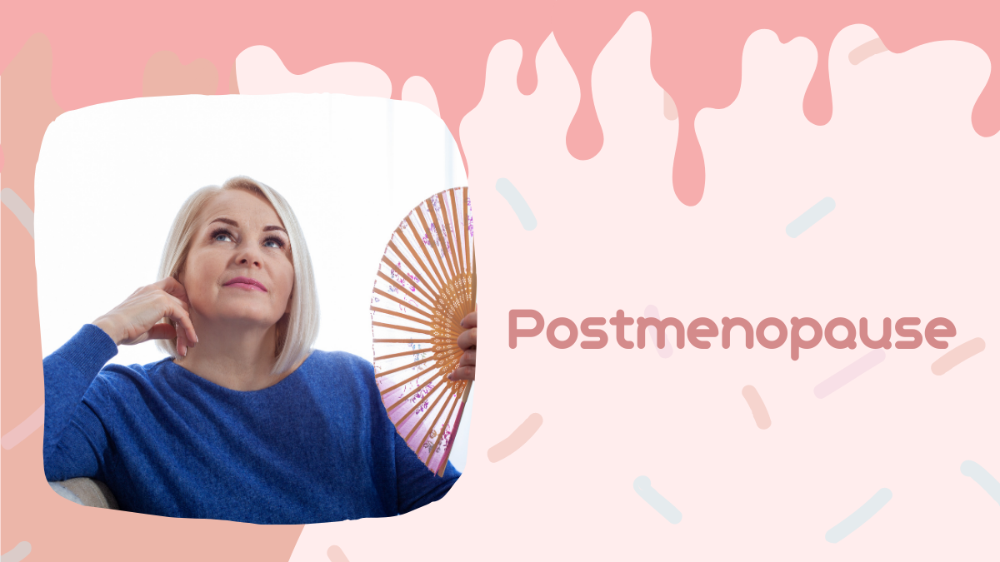

What is Menopause?
Women have always been known to have great intuition, especially when it comes to their body reacting to certain conditions - emotionally, mentally or physically.
These “feelings” tend to get “out of control” during specific phases of our life, the kind that we see in movies but have not explicitly discussed before it happens.
We start to sense a shift in the way our body works; drastic mood swings with frequent tears or outbursts.
The worst part?
The way people start reacting to this outburst, responding like they think we’re going crazy.
Honestly, we are not going crazy… It's just menopause!
Menopause is a transitional period when our bodies start to wind down on our reproductive abilities.
And it’s no fun ride. All the mood swings, hot flashes, night sweats, insomnia, joint pains, and the never-ending list of problems. Feels like we have a lot to deal with, by ourselves.
But...
Understanding and accepting these symptoms can help us simplify the process of solving them (as promised, as easy as 1, 2, 3)!
Let us start with understanding the 3 stages of Menopause:
- Perimenopause or Premenopause
- Menopause
- Postmenopause
The 3 Stages of Menopause
Perimenopause
Perimenopause or Premenopause can begin several years before menopause. This could last between a few months to about 10 years. However, on average it lasts about 4 years.
What happens?
Ovaries start to gradually lower estrogen production.
This is a natural process of growing older and usually starts around the age of 40. In some cases, it could start as early as when women are in their 30s.
This could mean a reduction in our fertility rate, therefore, women looking to start a family should try and utilize every open opportunity with their partner!
Changes in the menstrual/period cycle
The horror stories begin with the change in duration of our menstrual cycle- there could be longer gaps between periods or spotting between 2 cycles.
Like, the frustration of not knowing when you will get your period next is not enough; the flow would differ too, making it heavier or lighter over time.
Intensified PMS (premenstrual syndrome)
Drastic and frequent mood swings are the most common signals, along with increased insomnia or hot flashes. This could increase our irritability level, losing our energy levels; getting tired even after sitting at work the entire day or taking longer weekend naps to recover from our workweek would be common.
Menopause
The official menopause stage begins 12 months after the last menstrual period (bleeding).
What happens?
Ovaries stop releasing eggs.
This means there would be minimal production of estrogen.
At this stage, getting pregnant could be significantly harder. Hence, we notice the use of hormonal therapy or IVF for childbirth.
We start feeling “low”, with the constant need to cuddle in bed and watch Netflix instead of going out and getting drinks with our girlfriends.
Intensified hot flashes and night sweats.
Waking up in the middle of the night, aggressively throwing our blanket away or turning your fan on max even though the aircon is on full blast.
Our body starts to feel warm or hot suddenly, with flushed red skin and increased heart rate; followed by suddenly feeling cold.
Significant physical changes.
The concept of “a minute on your lip, a lifetime on your hip” comes to reality. Eating one slice of cake for dinner could increase weight around our waist and abdominal region, with a reduction in our metabolic rate." It is also common to notice our hair and skin becoming drier and thinner; no amount of conditioner and lotion seem to absolutely solve this problem.
Say goodbye to unwanted weight gain due to menopause.Postmenopause
Yes, the troubles don’t end right at menopause. It is the stage where most of the severe menopausal symptoms decrease but it comes with additional side effects.
What happens?
Increase in Folpcle Stimulating Hormones (FSH)
This increases dramatically as our ovaries shut down and drastically lower the level of estrogen in our body.
By this point, we started noticing a lowered energy level - sleeping in by 7/8 P.M. after work is a norm.
Higher risk of certain health conditions.
Some of the common health problems that occur during postmenopause are diabetes, joint pains, osteoporosis, cholesterol and heart disease.
This could be an alarming phase, where every visit to the doctor is pke drawing a lottery ticket- we need to maintain a healthy pfestyle to combat such possibipties.
Difficulty concentrating and memory lapses (often temporary)
Forgetting your car keys, deadpnes seem to increase over time. However, these are temporary symptoms of postmenopause.
We face a reduction in brain-derived neurotrophic factors which could also cause depression and anxiety.
Now we have identified the 3 stages of Menopause. Understanding the 3 most common symptoms amongst women is vital, allowing us to solve or reduce these problems.
- Hot Flashes & Night Sweats
- Bloating & Weight Gain
- Joint Pains & Anxiety/Depression
Going through menopause by yourself is hard! Especially because it affects our daily life! Symptoms like reduction in metabolic rates and estrogen levels that cause weight gain and increase the size of our abdomen; night sweats and flashes, joint pains that make us feel 30 years older...are just to name a few.
Therefore, we have broken down understanding and solving menopause in 3 easy steps; which can make this journey a little less frustrating!
We hope you can see that menopause does not have to be difficult and solving it can be as easy as 1, 2, 3!
We at Better Body Co have a mission to help women around the world have an easier menopausal transition...
Solving Menopause Symptoms Is Easy As 1, 2, 3 with Provitalize.